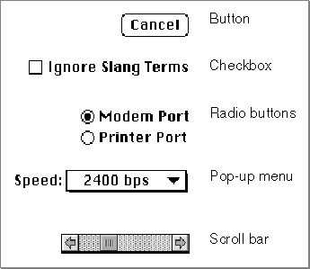

Introduction to Controls
The Control Manager provides several standard controls. Figure 5-1 illustrates these standard controls: buttons, checkboxes, radio buttons, pop-up menus, and scroll bars. You can also design and implement your own custom controls.Figure 5-1 Standard controls provided by the Control Manager

Buttons, checkboxes, and radio buttons are the simplest controls. They consist of only a title and an outline shape, and they respond to only mouse clicks. A pop-up menu is slightly more complex. This control has a menu attached to its title, and it must respond when the user drags the cursor across the menu. A scroll bar, because it consists of different parts that behave differently, is the most complex of the standard controls. Even though a scroll bar has several parts, it is still only one control.
The Control Manager displays these standard controls in colors that provide aesthetic consistency across all monitors, from black-and-white displays to 8-bit color displays.
To ensure consistency across applications, you generally shouldn't change the default colors of controls, although the Control Manager does allow you to do so with theSetControlColorprocedure (described on page 5-101) or the control color table resource (described on page 5-121).Standard controls and common custom controls are described in the next
several sections.
Subtopics
- Buttons
- Checkboxes
- Radio Buttons
- Pop-Up Menus
- Scroll Bars
- Other Controls
- Active and Inactive Controls
- The Control Definition Function